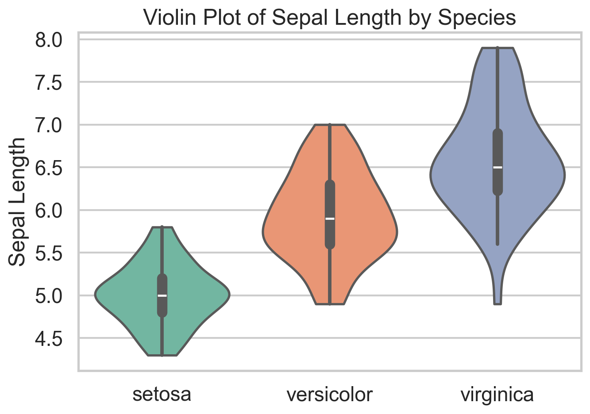
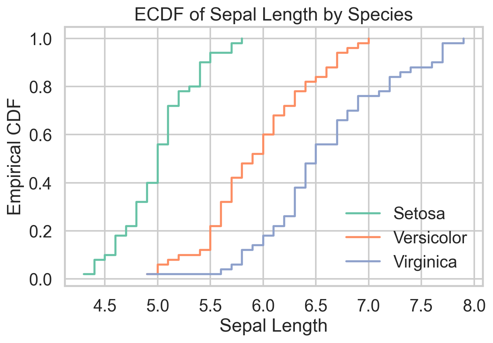
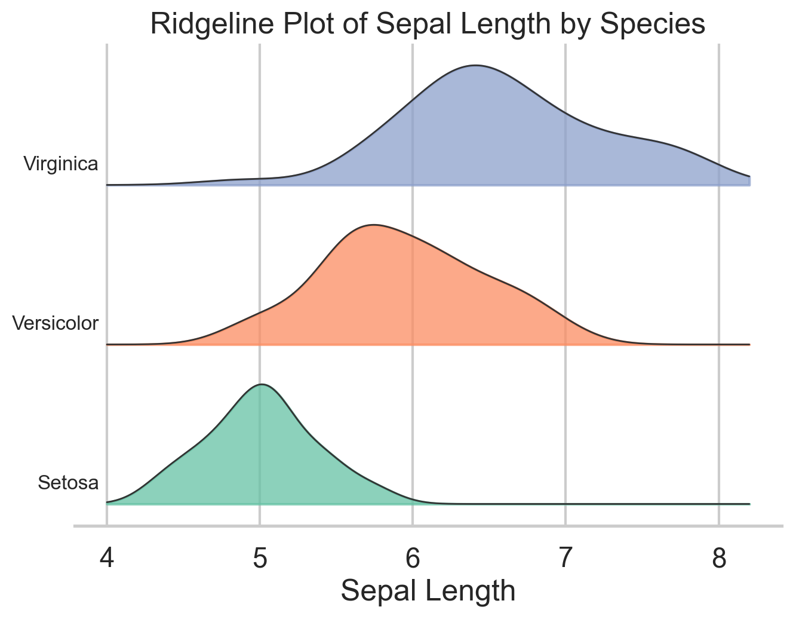
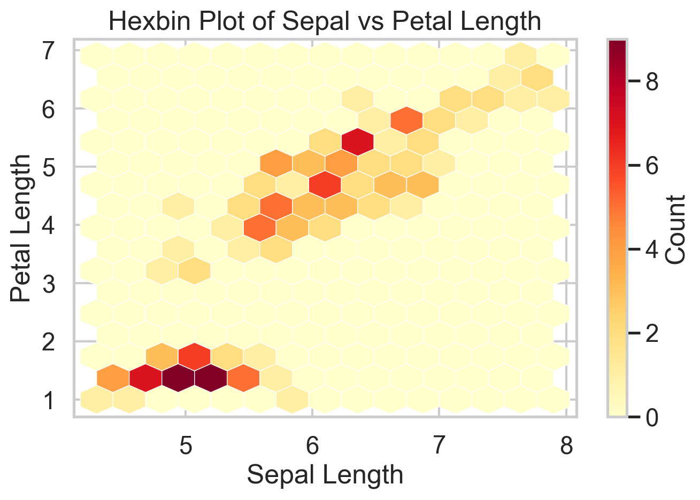
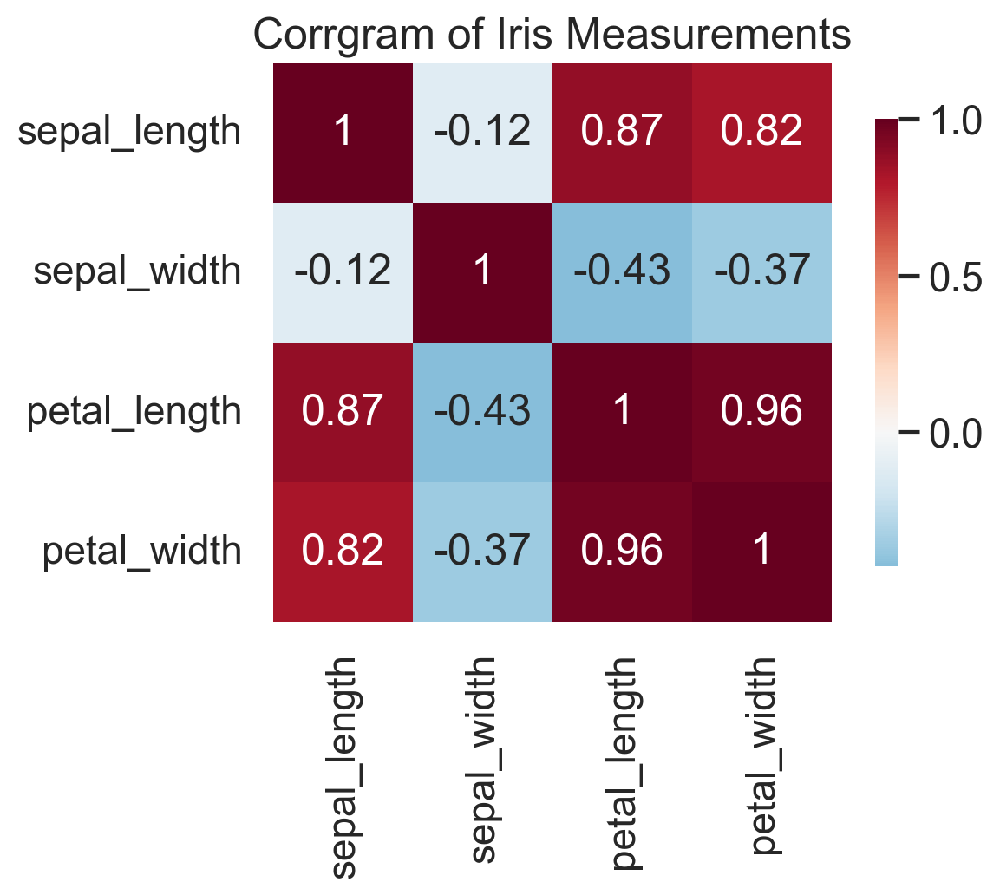

6 Underrated Plot Types
Background
Most data science workflows rely on a familiar trio of plots: histograms, scatterplots, and boxplots. They are useful, but they leave a lot of structure hidden in the data.
There are several plots that statisticians use regularly but that rarely show up in typical data science notebooks. Many of these are extremely informative for diagnostics, distribution comparison, or exploring high-dimensional relationships.
In this post we’ll look at six of them. To keep things simple we will use the same dataset throughout: the classic iris dataset. The goal is not mathematical rigor but practical intuition and code you can reuse. All examples below are shown in R and Python.
A Closer Look
Let’s start by loading the data.
library(ggplot2)
library(ggridges) # install.packages("ggridges")
library(hexbin) # install.packages("hexbin")
library(corrplot) # install.packages("corrplot")
data(iris)import matplotlib.pyplot as plt
import numpy as np
import seaborn as sns
import scipy.stats as stats
from sklearn.datasets import load_iris
iris_bunch = load_iris(as_frame=True)
iris = iris_bunch.frame.copy()
iris["species"] = iris["target"].map(dict(enumerate(iris_bunch.target_names)))
iris = iris.rename(columns={
"sepal length (cm)": "sepal_length",
"sepal width (cm)": "sepal_width",
"petal length (cm)": "petal_length",
"petal width (cm)": "petal_width",
})Q-Q Plot
A Q-Q plot compares sample quantiles to theoretical quantiles from a reference distribution. In practice that reference is usually the normal distribution, which makes the plot a fast diagnostic for residual checks and distributional shape. If the points line up, the sample is broadly consistent with the reference. If they bend away from the line, that tells you where the mismatch lives: skewness shows up as asymmetric curvature, while heavy tails pull the extremes away from the line. One can also use Q-Q plots to compare two empirical distributions, but I’d argue there are better ways to do that.
What I like about Q-Q plots is that they force you to think about where a distribution departs from a model, not just whether a normality test rejects. The downside is that they are easy to overread in small samples and less useful if you do not have a meaningful reference distribution in mind. Unlike traditional statistical tests, Q-Q plots do not spit out a \(p\)-value, so you have to interpret the plot yourself.

ggplot(iris, aes(sample = Sepal.Length)) +
stat_qq(color = "#66c2a5", size = 2) +
stat_qq_line(color = "black", linewidth = 0.8) +
theme_minimal() +
labs(
title = "Q-Q Plot of Sepal Length",
x = "Theoretical Quantiles",
y = "Sample Quantiles"
)stats.probplot(iris["sepal_length"], dist="norm", plot=plt)
plt.title("Q-Q Plot of Sepal Length")
plt.xlabel("Theoretical Quantiles")
plt.ylabel("Sample Quantiles")
plt.show()Violin Plot
A violin plot combines a boxplot with a smoothed (symmetric) density estimate. That makes it useful when a plain boxplot feels too compressed. Two groups can have similar medians and quartiles but very different shapes, and a violin plot makes that visible immediately. In the iris data, it is a quick way to see that species differ not only in central tendency but in how concentrated or dispersed their sepal lengths are.
The main drawback is that the density is smoothed, so small samples can look more structured than they really are. It can also be sensitive to the smoothing parameters (bandwidth more than kernel type). Violins also become noisy if you cram in too many categories. Still, when I want a compact distribution comparison across a handful of groups, violin plots are often a strict upgrade over boxplots.

ggplot(iris, aes(x = Species, y = Sepal.Length, fill = Species)) +
geom_violin(trim = FALSE) +
geom_boxplot(width = 0.12, fill = "white", outlier.shape = NA) +
theme_minimal() +
labs(title = "Violin Plot of Sepal Length by Species")sns.violinplot(data=iris, x="species", y="sepal_length", inner="box")
plt.title("Violin Plot of Sepal Length by Species")
plt.xlabel("")
plt.ylabel("Sepal Length")
plt.show()ECDF Plot
The empirical cumulative distribution function shows the share of observations less than or equal to a given value. That sounds modest, but it is one of the cleanest ways to compare distributions because it avoids arbitrary bin choices and displays the full sample directly. When one ECDF sits to the right of another, you can read that as a first-order stochastic dominance story, at least visually.
The ECDF is defined as
\[ \hat{F}_n(x) = \frac{1}{n} \sum_{i=1}^n 1(X_i \le x). \]
Do you remember that the PDF is the derivative of the CDF? Yes, CDF is really central to probability theory and understanding any variable at hand. In microeconomic theory classes, ECDFs are used to establish stochastic dominance relationships. I like ECDFs because they are honest. They show every observation’s contribution to the distribution without smoothing it away. The tradeoff is that they are less familiar to many audiences and can look busy when too many groups are overlaid. For side-by-side distribution comparison, though, they are hard to beat.

ggplot(iris, aes(Sepal.Length, color = Species)) +
stat_ecdf(linewidth = 1) +
theme_minimal() +
labs(
title = "ECDF of Sepal Length by Species",
x = "Sepal Length",
y = "Empirical CDF"
)sns.ecdfplot(data=iris, x="sepal_length", hue="species")
plt.title("ECDF of Sepal Length by Species")
plt.xlabel("Sepal Length")
plt.ylabel("Empirical CDF")
plt.show()Ridgeline Plot
Ridgeline plots stack several density curves vertically, which makes them especially useful when you want to compare many related distributions at once. The variables, however, need to be on more-or-less the same scale for the plot to make sense. They are common in cohort analysis and time-based comparisons, but they also work well for grouped exploratory analysis like the species differences in iris.
Their advantage is compactness: you can compare several distributions without the visual clutter of heavy overlap. Their weakness is that they are still density plots, so the same caution about smoothing applies. I use ridgelines when I want a plot that is more expressive than small multiples but less chaotic than overlaying five or six densities in one panel.

ggplot(iris, aes(x = Sepal.Length, y = Species, fill = Species)) +
geom_density_ridges(alpha = 0.7, color = "white") +
theme_ridges() +
labs(
title = "Ridgeline Plot of Sepal Length by Species",
x = "Sepal Length",
y = NULL
)species_order = ["setosa", "versicolor", "virginica"]
x_grid = np.linspace(iris["sepal_length"].min() - 0.3,
iris["sepal_length"].max() + 0.3, 300)
offsets = [0.0, 1.0, 2.0]
fig, ax = plt.subplots(figsize=(7, 5))
for offset, species in zip(offsets, species_order):
subset = iris.loc[iris["species"] == species, "sepal_length"]
kde = stats.gaussian_kde(subset)
density = kde(x_grid)
density = density / density.max() * 0.8
ax.fill_between(x_grid, offset, offset + density, alpha=0.7)
ax.plot(x_grid, offset + density, color="black", linewidth=0.8)
ax.text(x_grid.min() - 0.02, offset + 0.12, species, ha="right")
ax.set_title("Ridgeline Plot of Sepal Length by Species")
ax.set_xlabel("Sepal Length")
ax.set_yticks([])
plt.show()Hexbin Plot
Scatterplots are great until they are not. Have you tried a scatterplot with a million points? It’s slow and it’s hard to see anything. Once the sample gets large enough, overplotting hides the very structure you want to see. Hexbin plots solve that by aggregating points into small hexagonal cells and coloring those cells by count. You give up the exact point cloud, but in return you get a much clearer view of where the data are concentrated.
The iris data are too small to truly need a hexbin, which is worth saying out loud. But the plot still illustrates the logic well. On genuinely large datasets, this is often the right substitute for a scatterplot. The cost is that rare points and local outliers become less visible, so it is better for density structure than for point-level inspection.

ggplot(iris, aes(Sepal.Length, Petal.Length)) +
geom_hex() +
theme_minimal() +
labs(
title = "Hexbin Plot of Sepal vs Petal Length",
x = "Sepal Length",
y = "Petal Length"
)plt.hexbin(
iris["sepal_length"],
iris["petal_length"],
gridsize=14,
cmap="YlOrRd"
)
plt.xlabel("Sepal Length")
plt.ylabel("Petal Length")
plt.title("Hexbin Plot of Sepal vs Petal Length")
plt.colorbar(label="Count")
plt.show()Corrgram
A corrgram turns a correlation matrix into something you can actually read. Before fitting a regression, building a clustering pipeline, or running PCA, I almost always want to know which variables are moving together and which are largely independent. A corrgram gives that answer in a single glance.
The upside is speed: strong blocks, redundancies, and likely multicollinearity jump out immediately. The downside is that (Pearson) correlation is a blunt summary. It only captures linear association, ignores conditional relationships, and can be badly distorted by outliers. Presumably, one can move away from Pearson correlation and do the same plot with other correlation measures. Corrgrams also don’t work well with too many variables.So I treat corrgrams as a screening device, not as evidence of mechanism. Used that way, they are extremely effective.

corr_matrix <- cor(iris[, 1:4])
corrplot(
corr_matrix,
method = "color",
type = "upper",
tl.col = "black",
tl.srt = 45
)corr = iris.drop(columns=["species", "target"]).corr()
sns.heatmap(corr, annot=True, cmap="RdBu_r", center=0)
plt.title("Correlation Matrix (Corrgram)")
plt.show()In the iris data, the corrgram immediately tells you that petal length and petal width are carrying very similar information. That is exactly the kind of thing you want to know before moving on to feature engineering, PCA, or a predictive model.
Bottom Line
- Q-Q plots are among the fastest ways to diagnose whether a distributional assumption is wrong and where it fails.
- Violin plots and ECDFs are often better than boxplots and histograms when the goal is comparing full distributions across groups.
- Ridgeline plots are excellent for compact multi-group distribution comparisons, especially when overlaid densities start to look messy.
- Hexbin plots are the right replacement for scatterplots once overplotting becomes a real problem.
- Corrgrams are simple but high-value screening tools before modeling, especially when redundancy and multicollinearity are on the table.
Where to Learn More
Wilke’s Fundamentals of Data Visualization is what I have in my bookshelf, but I admit I don’t reach out for it very often. Novice data scientists will sure benefit from it, though.
References
Wilke, C. O. (2019). Fundamentals of Data Visualization. O’Reilly Media.